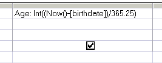

Return the integer portion of a number.
Syntax
Int(expression)
Key
expression A numeric expression.
The Int() function can be used in VBA or in an SQL query.
Examples
Dim dblDemo as Double
dblDemo = Int(123.45)
Returns 123
dblDemo = Int(-123.45)
Returns -124
Int() is often used to calculate age from a date of birth so that 30.9 years will display as 30 years old:

“Superstition sets the whole world in flames; philosophy quenches them” ~ Voltaire
Related:
Abs - The absolute value of a number (ignore negative sign)
Fix - Return the integer portion of a number (negative numbers round up)
Str - Return a string representation of a number.
Excel has an identical function int()